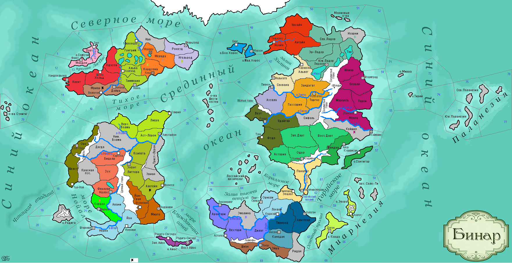

<==
| 8 |
| 9 |
| 10 |
| 11 |
| 12 |
| 13 |
| 14 |
| 15 |
| 16 |
==>
Боголюбы
Религиозная школа, появившаяся в 1165 г. в орнельском городе Кудасай. Последователи этого учения жгли костры, разговаривали на одном, понятном только им языке и проповедовали, что все люди, независимо от их национальностей - одна единая семья, любящая Бога. [появляется Ересь Боголюбов, локация с ними дает +5% к шансу ассимиляции]

14-й ход истории мира Бинар (1165 г.)
· Варвары Эриана нападают на эомерскую провинцию Алетейя! Новым правителем Эомера становится Эотан I Мудрый, который принимает в 1165 г. андуизм в качестве государственной религии страны. Эотан I Мудрый первым закрепил в рукописном манускрипте «Историю явления Бога Анду», первом Святом писании данного религиозного учения.
· Безвластие в Коринтаре закончилось с воцарением Амбета II.
· Ладориан и Белаэр заключают оборонительный союз.
· В Форзерде поднимается народно-освободительная армия – «Союз медоваров», которая наносит поражение войскам Фриулеса в провинции Мелада.
· Герцог Скандии Хальдруп I переносит столицу страны в г.Форкс.
· Страна Атуан принимает Аквилианство.
· Восставшие в Кордаве добираются до князя Эгрика I и скидывают его на вбитые в землю колья. К всеобщему ликованию трон страны занял лидер повстанцев Индарик.
· В провинции Канедан власти Темпеста открывают Латифундию.
· Свидар I провозглашает Белаэр царством и, глядя на вершину Шунди, принимает корону «царя-под-горой». С умом воспользовавшись наследием захваченной страны, Свидар I отказывается от язычества и принимает обряд по каратанскому учению, которое велено теперь именовать «синарским учением».
· Войска Ксеп Ха Хоца совершают грабительский рейд в провинцию Азулла!
· Язычники прогнаны из провинции Дилат. Герцог Моэдаса ведет армию в Эмалину, чтобы навсегда разорить это «осиное гнездо» варваров и добивается успеха.
· В Вейнаре на фоне кончины князя Жемара I и нехватки соли начинается период нестабильности. Бездетный князь не оставил после себя потомства, поэтому трон захватывает начальник городской стражи Карфаон.
· На побережье Мриара высаживаются варвары, приплывшие из-за Тихого моря! Армия, находившаяся в г.Морфер, идет в прорыв и разбивает повстанцев Союза медоваров.
· На смену Валиру Жестокому в Астерлии приходит к власти его сын, Леосп Тихий. Варвары Трист-Лерона разбивают войска Астерлии при попытке переправы через реку Вэлма.
· Наратиус I принимает власть в Ферлустане. Обвинив соседнюю страну в распространении оспы, убившей его отца, Наратиус I объявляет войну Кордаве. Воспользовавшись тем, что войска Ферлустана стояли в Кордаве, агрессор неожиданно нападает на столицу Кордавы, но стены, отстроенные легендарным правителем Шилоцитаклем смогли остановить врага.
· Верховный патриций Дюрандаля Утрин I объявляет себя «первосвященником» культа Мортис.
· Князь Геннаро I тяжело переживал вести из Форзерда. Старое сердце не выдержало и остановилось… Трон занимает его сын Геннаро II.
· Основаны новые города: Шолшкири (Йонтари)